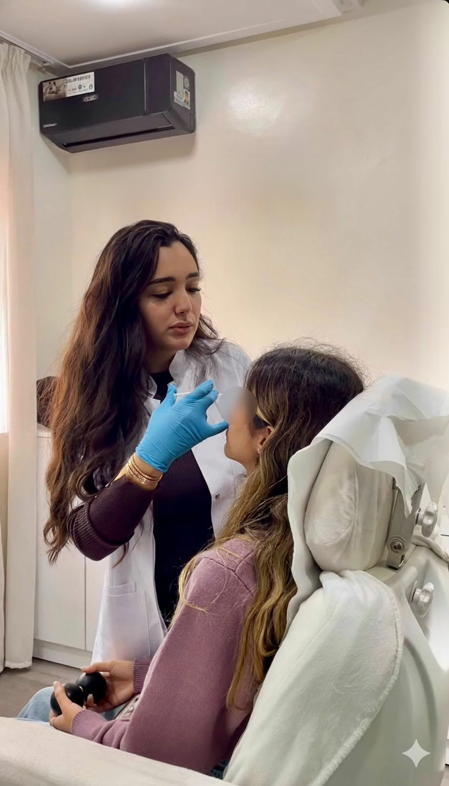

Une mâchoire marquée ou « carrée » peut peser sur l'harmonie du visage ; le bruxisme, lui, use les dents et fatigue les mâchoires au quotidien. Le botox masséter à Casablanca répond à ces deux problématiques : affiner l'angle mandibulaire en agissant sur l'hypertrophie musculaire, et réduire l'intensité du serrement involontaire lorsque le masséter surtravaille. Pour situer ce geste dans l'ensemble des solutions injectables disponibles au Maroc, consultez d'abord notre guide complet des injections esthétiques à Casablanca. Vous découvrirez ici les indications précises, le déroulement d'une séance au cabinet de Dr Yousra El Khadri, la durée des effets et les précautions indispensables.
Qu'est-ce que le muscle masséter ?
Le masséter est l'un des muscles les plus puissants de la mastication. Il relie l'angle de la mâchoire au crâne et se contracte à chaque bouchée, chaque serrement ou grincement des dents. Chez certaines personnes — souvent sans surpoids apparent — ce muscle est naturellement volumineux, ce qui donne un angle mandibulaire large (aspect parfois décrit comme mâchoire carrée chez la femme ou chez l'homme). Chez d'autres, un stress prolongé ou un bruxisme nocturne entraîne une hyperactivité permanente : le muscle grossit à l'usage, comme un muscle de sport.
À quoi sert le botox dans le masséter ?
La toxine botulique de type A bloque temporairement la transmission nerveuse vers les fibres musculaires ciblées. Injectée dans le masséter, elle ne « fond » pas la graisse : elle diminue la force de contraction et, avec le temps, la taille du muscle lorsqu'il était hypertrophié. Deux grands motifs de consultation se distinguent à Casablanca :
- Objectif esthétique — affiner la mâchoire : adoucir l'angle mandibulaire, allonger visuellement l'ovale du visage et harmoniser le tiers inférieur avec le milieu du visage.
- Objectif fonctionnel — bruxisme et tensions : réduire le serrement excessif pour limiter l'usure dentaire, les douleurs matinales et la fatigue des articulations temporomandibulaires (ATM), en complément d'une évaluation dentaire si nécessaire.
Ces deux intentions peuvent coexister : une patiente peut à la fois rechercher un ovale plus fin et soulager des symptômes de bruxisme botox-sensibles.

Déroulement d'une séance au cabinet
Au cabinet du Quartier des Hôpitaux, la consultation précède toujours l'injection. Dr Yousra El Khadri palpe le masséter, vous demande de serrer les dents pour visualiser l'épaisseur du muscle et définit le nombre d'unités nécessaires — sans standardisation « catalogue » : chaque visage diffère. La peau est désinfectée ; les injections sont réalisées avec des aiguilles fines, en quelques minutes. La douleur est en général modérée, comparable aux autres zones de botox.
Les consignes post-injection sont identiques à celles du reste du visage : éviter de masser la zone, limiter le sport intense et les sources de chaleur excessive les premières 24 heures, rester en position verticale quelques heures. Pour une vue d'ensemble des autres zones traitées par toxine botulique, voir la page dédiée aux injections de Botox à Casablanca.
Résultats : calendrier réaliste
Le relâchement du muscle commence vers J+10 à J+14. L'affinement de la mâchoire, lui, s'observe sur plusieurs semaines : comptez souvent 4 à 8 semaines pour juger du gain sur l'angle mandibulaire. Les effets durent en moyenne 4 à 6 mois ; des séances régulières peuvent aider à maintenir un muscle moins épais dans le temps. En cas de bruxisme, le soulagement des tensions peut apparaître plus précocement pour certaines patientes.
Mâchoire carrée : muscle, graisse ou os ?
L'expression « mâchoire carrée femme » ou homme recouvre en réalité plusieurs anatomies. L'injection de toxine botulique n'agit que sur le muscle : si l'angle mandibulaire paraît large parce que le masséter est hypertrophié, le botox est pertinent. Si la largeur vient surtout de la structure osseuse (mandibule naturellement large), l'injection ne modifiera pas l'os ; d'autres options médicales ou chirurgicales peuvent être évoquées en consultation honnête. Lorsque le volume sous la mâchoire tient à la graisse sous-cutanée (bajoues légères), le masséter n'est pas non plus la cible première : d'où l'importance du diagnostic clinique avant tout geste.
Dr El Khadri observe votre visage au repos et en dynamique (mastication volontaire, sourire) pour estimer l'épaisseur du masséter et la symétrie droite–gauche. Une asymétrie modérée est fréquente ; le plan d'injection peut alors être légèrement différent de chaque côté pour tendre vers un ovale plus équilibré.
Alimentation et sport après le botox masséter
Les premiers jours, certaines patientes ressentent une petite fatigue musculaire en mâchant des aliments très durs ou caoutchouteux : il est prudent de privilégier une alimentation plus tendre pendant une courte période. Cela ne signifie pas arrêt de la mastication : le muscle continue de fonctionner, simplement avec moins de force excessive. Le sport peut reprendre rapidement, en respectant les 24 premières heures sans effort intense ni chaleur excessive sur le visage.
Contre-indications et prudence médicale
La grossesse, l'allaitement, les pathologies neuromusculaires évolutives et certaines allergies médicamenteuses contre-indiquent le traitement. Si vous présentez un désordre articulaire sévere des mâchoires, une évaluation spécialisée peut être nécessaire avant toute injection. Les produits utilisés au cabinet proviennent de laboratoires partenaires reconnus (traçabilité, formation continue) : la liste des marques et laboratoires est présentée sur la page partenaires.
Combinaisons et maillage avec d'autres actes
Le botox masséter se combine fréquemment avec le botox du front ou la glabelle pour un plan global du tiers supérieur et moyen du visage. Pour les objectifs purement d'ovale et de contours sans rapport avec le muscle, d'autres approches (filler de mâchoire, lipolyse de bajoues, etc.) peuvent être discutées : elles ne remplacent pas le rôle spécifique du botox sur un masséter hypertrophié.
Si votre priorité est d'affiner le visage sans nécessairement passer par le masséter, explorez aussi nos contenus sur le raffinement des traits et de l'ovale — la consultation détermine quelle option est médicalement la plus pertinente.
Foire aux questions
Prendre rendez-vous au cabinet de Dr Yousra El Khadri
Vous souhaitez évaluer si le botox masséter est adapté à votre morphologie ou à votre bruxisme ? Le cabinet de Dr Yousra El Khadri, situé au Quartier des Hôpitaux à Casablanca, vous accueille sur rendez-vous pour une analyse personnalisée.
Lundi au vendredi : 9h à 19h · Samedi : 9h à 14h